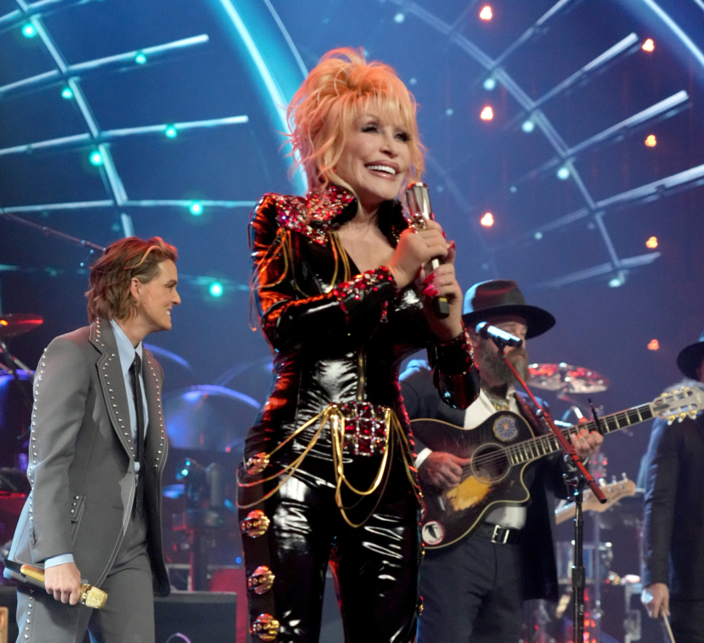
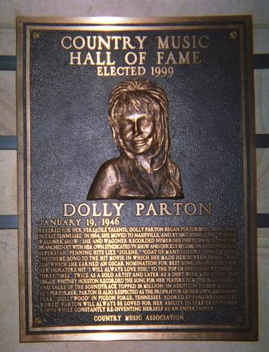

In 2022, Dolly Parton was inducted into the 2022 Rock & Roll Hall of Fame. She initially turned down the nomination, since she believed it was an honor she had not earned. She eventually accepted the nomination and performed at the induction ceremony.Dolly Parton was inducted into the Country Music Hall of Fame in 1999, 28 years after her first solo #1 hit.Dolly has also written several successful children's books.Dolly Parton was born in the Great Smoky Mountains in Eastern Tennessee.Dolly Parton and Miley Cyrus are very close - in fact, Miley is Dolly's goddaughter! In this picture, they are performing together at the 61st annual Grammy Awards.Dolly received a nomination for a Golden Globe for Best Actress - Motion Picture Musical or Comedy for her role in her first feature film 9 to 5 (1980).